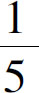
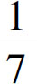
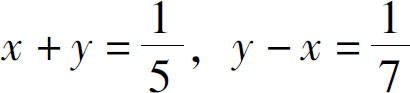
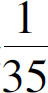
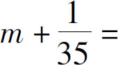
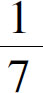
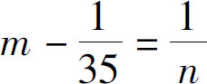

接下来，我们要讨论一些更为复杂的问题，其中被隐藏的不是数字，而是规律．例如下面的问题：
有一个两位数，十位比个位上的数字大4，如果把十位和个位的数字对调一下，就会比原来的数大21，请问这个数是多少？
在这个题目当中，就不存在隐藏的数字，更不能假设一个总量为1，那么，应该怎么计算呢？我们应该把背后的规律找出来，什么叫规律呢？就是等量关系．比如我们假设个位数是x ，十位数是y ，那么，十位上的数字比个位上的数字大4，我们很容易得到等式：y ＝x ＋4．把数字对调一下，应该怎么表示呢？这就要求我们找出隐藏在对调这两个数字背后的规律．我们要知道，一个两位数的数值等于十位上的数字乘以10，再加上个位上的数字，也就是10y ＋x ，那么如果对调了呢？就是把个位上的数字x 挪到了十位上，结果就会是10x ＋y ．它们两个差多少呢？差21，也就是10x ＋y －21＝10y ＋x ．于是我们就得到了这个二元一次方程的两个独立的等式．
与此类似的还有溶液配比问题：
我们用多少克30％的盐水和多少克50％的盐水能够配制出400克42％的盐水呢？
从这个题目中，我们看不出存在任何等量关系，这时候我们就需要根据常识，把背后的规律找出来．根据质量守恒的原理，在溶液配比的前后，溶液中各部分物质的总量是不变的，也就是说，混合溶液中水的量等于原来溶液中水的总量，混合溶液中盐的量也等于原来溶液中盐的总量．所以，我们就可以根据这个规律，假设需要x 克30％的盐水，y 克50％的盐水．最后需要的溶液的总质量是400克，也就是说，x ＋y ＝400，其中盐的质量分别是：30％x 、50％y 和42％×400．而其中盐的总量是不变的，也就是30％x ＋50％y ＝42％×400，这样一对方程组就得到了．
看明白了这个问题，我们再来看一个运动问题：
在一条河的上下游分别有A、B两个城市，如果我们坐一条快船，从A地开往B地，需要5个小时，因为河水在流动，我们回来的时候呢，就得逆流行驶，需要7个小时．现在这个快船满员了，就只能坐一条慢船了，这慢船需要7个小时才能从A地开到B地，那么，这条慢船开回来需要多久的时间呢？
乍一看，这个题目还是一个分数问题，只要我们设置A、B两地的总距离是1就可以了，但是仔细一想不是这么简单，因为船在走，水也在流．那我们首先就要把顺水行船和逆水行船的规律找出来．根据我们的常识，船在静止的水里走的时候，速度是固定的，不管往哪个方向走，都是一样的速度，走过相同的路程，那时间肯定也是相同的．但是，如果在流动的水里走，就要加上或者减去流水的速度．所以，要想对这个问题求解，我们就必须先把水的速度算出来．根据题意，我们得到，快船顺水5个小时到达，逆水7个小时到达，那么如果我们设置总距离是1，也就得到快船的顺水速度是

、逆水速度是
，如果我们设置水流速度是x ，快船走的速度是y ，就得到了
．解这个方程组就得到了水流的速度是
．我们再假设慢船的速度是m ，逆水行船的时间是n ，那么就得到了一组类似的新的方程式：顺水行船的速度是

，逆水行船的速度是
．求解这个方程组，就会得到最终结果了．可以看到，跟先前的两类问题相比，这类问题明显要困难很多．当解决这类复杂问题的时候，如果我们从题目当中不能明确地发现等量关系，应该如何下手呢？为了把复杂问题化简，我们仍然需要把复杂问题拆分成三个独立的步骤来解决：
第一步，要想解决这个问题，就要先离开这个问题，按照这个问题的大意，先仿造一个最简单的问题．为什么我们不解决原来的问题，而要构造一个新问题呢？这是因为原来的问题里面，各种嘈杂的数字和信息都混在了一起，让我们很难抓到问题的本质．所以要先把问题的核心抽取出来，想一想，如果不是这个问题，而是另一个更简单的问题，我会不会做呢？一个最简单的溶液配比问题应该怎么解决？一个最简单的顺水行舟问题怎么解决？从最简单的问题中，虽然不能直接得到答案，但是我们却可以得出此类问题的基本规律，从而发现等量关系，得出解决这一类问题的总的办法．
第二步，当等量关系得到以后，就可以在稿纸上横着把这个公式写下来．然后，我们再回到原题里面，把原题拆解成几个相互独立的过程，从每个过程中发现一个独立的等量关系，而后把他们分成几行，一行一行地把原题中的数据或者变量，写到和公式对应的位置上．也就是说，相当于我们先在稿纸上，画出来一个表格，表格的标题行，是一个标准的等量关系式；表格的内容行，就是题目中的每一种具体的等量关系．当逐渐把表格填满了以后，我们就分别得到了几个独立的方程式，最后，我们只需要选择相关的方程，就可以组成方程组了．
第三步，当然就是解方程组求得答案了．有时候一组方程组得不到最终的答案也不要紧，只要我们再多列几组方程就可以了．在这类问题中，除了常见的溶液配比问题外，还有时间问题、运动问题、工作问题、空间计算问题等．不过，无论问题如何千变万化，对于我们而言，只要找到规律，列出等式，再把变量和数字填进去，就可以得到方程了．
到这里，我们学习了根据问题列出方程的方法．其中最简单的问题是白描式的，基本上看见问题就能写出表达式；稍微复杂一点的问题是题目背后有隐藏的数字，需要我们结合实际，把缺失的数字找出来；而更为复杂的问题是在题目背后有隐藏的规律，要先化简、找到等量关系，而后再列个表格，把题目中的变量和数字都填入表格里面，从而得到我们所需要的方程组．道理就是这么简单，关键是要勤加练习，你光靠耳朵听是学不会游泳的，光靠眼睛看也学不会骑车．俗话说熟能生巧，所以还是抓紧时间，多做一点练习，在实践中学习．
那么，含有隐含规律的应用题是不是就是最难的问题了呢？对不起，仍然不是！学习初中数学的目的是什么？改变世界！目前我们发现了改变世界的秘密吗？没有！我们努力列方程式的一切目标都是为了发现问题，那么发现问题最难的是什么呢？不是在试卷上发现问题，而是在实际生活中发现问题．